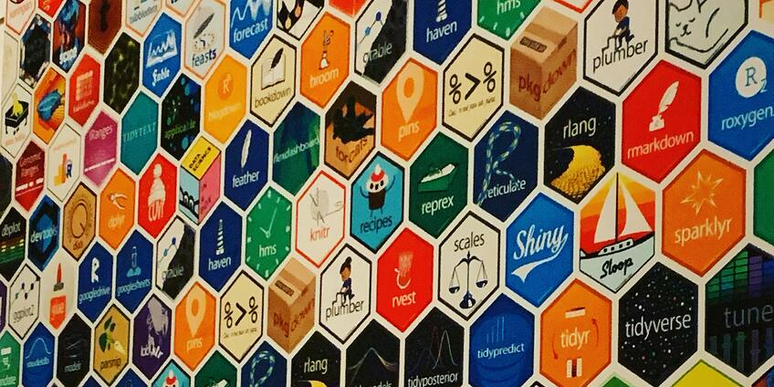

몇 가지 Open API를 이용한 데이터 수집 기능을 구현한 R 패키지를 만들어 봅니다.

앞에서 네이버 오픈 API를 이용해서 뉴스를 검색하는 함수와 공공데이터포털의 오픈 API를 이용해서 아파트 실거래 상세 정보를 조회하는 함수를 만들어 보았니다.
이제 이들 함수를 포함한 R 패키지를 만들어 보려 합니다. 다음의 내용을 담을 계획입니다.
패키지의 기본적인 정보를 담고 있는 메타 파일로 패키지의 버전, 저자, 종속성 등이 담겨 있습니다. CRAN의 R 패키지 페이지에서는 패키지의 여러 정보를 제공하는데, 대부분이 DESCRIPTION의 정보로 표현합니다.
개발하는 패키지가 참조하는 다른 패키지의 객체(함수나 메소드 등), 개발하는 패키지가 제공하는 객체를 네임스페이스에 등록하기 위한 정보를 담습니다.
R 디렉토리에 프로그램 소스 파일을 담는다. *.R 형식으로 이름을 정의합니다.
man 디렉토리에 데이터나 함수, 메소드에 대한 도움말 파일을 담는다. *.Rd 형식으로 이름을 정의합니다.
vignettes 디렉토리에 도움말 보다 좀 더 친절한 패키지 사용 방법을 소개하는 소품 파일을 담습니다. R 마크다운 편집 파일로 *.Rmd 형식으로 이름을 정의합니다.
data 디렉토리에 R 데이터 파일을 담습니다. R 데이터 파일로 *.rda 형식으로 이름을 정의합니다.
inst 디렉토리에 패키지를 구성하는 표준 파일이 아니지만 패키지에 제공할 파일을 넣을 수 있습니다.
DESCRIPTION, NAMESPACE 파일 이름은 변경이 불가능합니다. 소스파일과 소품 파일은 이름으로도 그 기능을 유추할 수 있도록 간결하면서 명확한 이름을 만들어야 합니다. 도움말 파일의 이름은 도움말을 제공하는 함수 혹은 메소드, 데이터 이름으로 정합니다.
파일 이름은 절대로 non-ASCII 문자를 포함하면 안됩니다.
RStudio의 기능을 이용하면 R 패키지의 골격을 쉽게 만들 수 있습니다.
패키지의 이름을 koscrap이라고 미리 정합니다. “Korean Scraping”을 연상하여 이름을 정했습니다.
File > New Project… 메뉴를 선택하면, 다음과 같은 다이얼로그 창이 뜹니다.
Figure 1: New Project Wizard 화면
새로운 디렉토리에 패키지를 만들 것이므로 첫번째, New Directory를 선택합니다.
Figure 2: R Package 선택 화면
R 패키지 프로젝트를 만들 것이므로 두번째, R Package를 선택합니다.
Figure 3: R Package 정의 화면
패키지 이름에 “koscrap”을 기입하고, 패키지를 설치할 디렉토리도 선정합니다. 그리고 “Open in new session”의 체크박스를 선택합니다. 이 체크 박스는 패키지가 만들어지면 RStudio의 새로운 세션에서 해당 패키지 프로젝트를 열어 줍니다.
“Create Project” 버튼을 누르면 RStudio의 새로운 세션이 다음처럼 열립니다.
Figure 4: koscrap 패키지 프로젝트 세션 화면
만들어진 R 패키지의 골격은 다음과 같습니다
Figure 5: koscrap 패키지 디렉토리 구조
hello.R이라는 R 소스 파일과 hello.Rd라는 도움말 파일이 만들어져 있습니다. 이들 파일의 내용을 살펴보겠습니다.
Package: koscrap
Type: Package
Title: What the Package Does (Title Case)
Version: 0.1.0
Author: Who wrote it
Maintainer: The package maintainer <yourself@somewhere.net>
Description: More about what it does (maybe more than one line)
Use four spaces when indenting paragraphs within the Description.
License: What license is it under?
Encoding: UTF-8
LazyData: trueexportPattern("^[[:alpha:]]+")
# Hello, world!
#
# This is an example function named 'hello'
# which prints 'Hello, world!'.
#
# You can learn more about package authoring with RStudio at:
#
# http://r-pkgs.had.co.nz/
#
# Some useful keyboard shortcuts for package authoring:
#
# Install Package: 'Cmd + Shift + B'
# Check Package: 'Cmd + Shift + E'
# Test Package: 'Cmd + Shift + T'
hello <- function() {
print("Hello, world!")
}
\name{hello}
\alias{hello}
\title{Hello, World!}
\usage{
hello()
}
\description{
Prints 'Hello, world!'.
}
\examples{
hello()
}Package: koscrap
Type: Package
Title: Scrap from Public Data Portal & Naver
Version: 0.1.1.9000
Date: 2022-01-31
Authors@R: c(
person("Choonghyun", "Ryu",, "choonghyun.ryu@gmail.com", role = c("aut", "cre"))
)
Description: Collect data using Open API from public data portal and scrap NAVER news article information.
Imports:
dplyr,
httr,
XML,
stringr,
purrr,
glue
Author: Choonghyun Ryu [aut, cre]
Maintainer: Choonghyun Ryu <choonghyun.ryu@gmail.com>
License: GPL-2 | file LICENSE
Encoding: UTF-8
LazyData: true
Roxygen: list(markdown = TRUE)
RoxygenNote: 7.1.1대표적인 태그의 의미는 다음과 같습니다.
다음처럼 두개의 소스 파일을 R 디렉토리에 복사해 넣습니다.
#' 아파트 실거래 데이터 가져오기
#'
#' @description 공공데이터포털에서 REST open API로 아파트 실거래 데이터를 수집합니다.
#'
#' @details 공공데이터포털에서 발급받은 API 인증키는 개인이 발급받은 키를 사용하며,
#' 유출되어서는 안됩니다.
#'
#' @param auth_key character. 공공데이터포털에서 발급받은 API 인증키
#' @param LAWD_CD character. 지역코드. 각 지역별 코드 행정표준코드관리시스템
#' (www.code.go.kr)의 법정동코드 10자리 중 앞 5자리
#' @param DEAL_YMD character. 실거래 자료의 계약년월(6자리)
#' @param chunk_no integer. 페이지번호
#' @param chunk integer. 한 페이지 결과 수
#' @param do_done logical. 한번의 호출로 모든 조회 결과를 가져오지 못할 경우,
#' 추가로 호출해서 모든 결과를 가져올지의 여부
#'
#' @return data.frame
#' 변수 목록은 다음과 같음.:
#' \itemize{
#' \item LAWD_CD : character. 지역코드
#' \item DEAL_DATE : character. 거래일자
#' \item SERIAL : character. 일련번호
#' \item BUILD_NM : character. 아파트 이름
#' \item FLOOR : integer. 층
#' \item BUILD_YEAR : integer. 건축년도
#' \item AREA : numeric. 전용면적
#' \item AMOUNT : integer. 거래금액
#' \item ROAD_CD : character. 도로명코드
#' \item ROAD_NM : character. 도로명
#' \item BUILD_MAJOR : character. 도로명건물본번호코드
#' \item BUILD_MINOR : character. 도로명건물부번호코드
#' \item ROAD_SEQ : character. 도로명일련번호코드
#' \item BASEMENT_FLAG : character. 도로명지상지하코드
#' \item LAND_NO : character. 지번
#' \item DONG_NM : character. 법정동
#' \item DONG_MAJOR : character. 법정동본번코드
#' \item DONG_MINOR : character. 법정동부번코드
#' \item EUBMYNDONG_CD : character. 법정동읍면동코드
#' \item DONG_LAND_NO : character. 법정동지번코드
#' \item DEALER_ADDR : character. 중개사소재지
#' \item CANCEL_DEAL : character. 해제여부
#' \item CANCEL_DATE : character. 해제사유발생일
#' }
#'
#' @examples
#' \donttest{
#' # Your authorized API keys
#' auth_key <- "XXXXXXXXXXXXXXXXXXXXXXXXXXXXXX"
#'
#' result <- trade_apt(auth_key, LAWD_CD = "11680", DEAL_YMD = "202104")
#' result <- trade_apt(auth_key, LAWD_CD = "11680", DEAL_YMD = "202104", do_done = TRUE)
#'
#' }
#'
#' @import dplyr
#' @importFrom XML xmlParse getNodeSet xmlValue xmlToDataFrame
#' @importFrom stringr str_pad
#' @importFrom purrr map_df
#' @importFrom glue glue
#' @export
trade_apt <- function(auth_key, LAWD_CD = "11110", DEAL_YMD = "202112",
chunk_no = 1, chunk = 400, do_done = FALSE) {
library(dplyr)
get_list <- function(doc) {
doc %>%
XML::getNodeSet("//item") %>%
XML::xmlToDataFrame() %>%
mutate(거래금액 = stringr::str_remove(거래금액, ",") %>%
as.integer()) %>%
mutate(DEAL_DATE = glue::glue("{년}-{str_pad(월, width = 2, pad = '0')}-{
str_pad(일, width = 2, pad = '0')}")) %>%
mutate(층 = as.integer(층)) %>%
mutate(건축년도 = as.integer(건축년도)) %>%
select(-년, -월, -일) %>%
select("LAWD_CD" = 지역코드,
DEAL_DATE,
"SERIAL" = 일련번호,
"DEAL_TYPE" = 거래유형,
"BUILD_NM" = 아파트,
"FLOOR" = 층,
"BUILD_YEAR" = 건축년도,
"AREA" = 전용면적,
"AMOUNT" = 거래금액,
"ROAD_CD" = 도로명코드,
"ROAD_NM" = 도로명,
"BUILD_MAJOR" = 도로명건물본번호코드,
"BUILD_MINOR" = 도로명건물부번호코드,
"ROAD_SEQ" = 도로명일련번호코드,
"BASEMENT_FLAG" = 도로명지상지하코드,
"LAND_NO" = 지번,
"DONG_NM" = 법정동,
"DONG_MAJOR" = 법정동본번코드,
"DONG_MINOR" = 법정동부번코드,
"EUBMYNDONG_CD" = 법정동읍면동코드,
"DONG_LAND_NO" = 법정동지번코드,
"DEALER_ADDR" = 중개사소재지,
"CANCEL_DEAL" = 해제여부,
"CANCEL_DATE" = 해제사유발생일)
}
api <- "http://openapi.molit.go.kr/OpenAPI_ToolInstallPackage/service/rest/RTMSOBJSvc/getRTMSDataSvcAptTradeDev"
url <- glue::glue(
"{api}?ServiceKey={auth_key}&pageNo={chunk_no}&numOfRows={chunk}&LAWD_CD={LAWD_CD}&DEAL_YMD={DEAL_YMD}"
)
doc <- XML::xmlParse(url)
resultCode <- doc %>%
XML::getNodeSet("//resultCode") %>%
XML::xmlValue()
if (resultCode != "00") {
result_msg <- doc %>%
XML::getNodeSet("//resultMsg") %>%
XML::xmlValue()
stop(result_msg)
}
total_count <- doc %>%
XML::getNodeSet("//totalCount") %>%
XML::xmlValue() %>%
as.integer()
deal_list <- doc %>%
get_list()
records <- NROW(deal_list)
if (!do_done | records >= total_count) {
return(deal_list)
} else {
cnt <- total_count %/% chunk
if (total_count %% chunk == 0) {
cnt <- cnt - 1
}
add_list <- (seq(cnt) + 1) %>%
purrr::map_df({
function(x) {
url <- glue::glue(
"{api}?ServiceKey={auth_key}&pageNo={x}&numOfRows={chunk}&LAWD_CD={LAWD_CD}&DEAL_YMD={DEAL_YMD}"
)
XML::xmlParse(url) %>%
get_list()
}
})
deal_list %>%
bind_rows(
add_list
) %>%
return()
}
}
roxygen2 패키지는 패키지를 개발할 때 help page를 기술하는 파일인 Rd 파일과 NAMESPACE 파일을 자동으로 작성해줍니다.
일반적으로 Rd 파일은 패키지 홈 디렉토리의 man 디렉토리에 .Rd, .rd 포맷의 이름으로 만듧니다. 그런데 roxygen2 패키지는 패키지를 정의하는 R 소스 파일에 roxygen 형식으로 스크립트를 작성하면, 자동으로 Rd 파일을 생성해줍니다.
NAMESPACE 파일에는 패키지에서 참조하는 다른 패키지나 패키지의 함수를 지정하는 import 정보 및 패키지의 함수에 접근할 수 있는 export 정보를 기술합니다.
다음은 roxygen 형식으로 스크립트를 작성한 R 소스 파일의 예제입다.
#' 두 월도 사이의 개월수 구하기
#' @description 두개의 년월 사이에 몇 개의 개월이 포함되는 지를 구함
#' @param start_year integer. 시작하는 년도를 나타내는 수치값
#' @param start_month integer. 시작하는 월을 나타내는 수치값
#' @param end_year integer. 종료하는 년도를 나타내는 수치값
#' @param end_month integer. 종료하는 월을 나타내는 수치값
#' @return 개월수를 나타내는 수치 벡터
#' @author 유충현
#' Maintainer: 유충현 <choonghyun.ryu@gmail.com>
#' @seealso \code{\link{get_next_month}}, \code{\link{is_indate}}
#' @examples
#' get_month_length(2015, 3, 2017, 3)
#' @export
get_month_length <- function(start_year, start_month, end_year, end_month) {
ifelse(start_month > end_month, 12 + end_month - start_month +
(end_year - start_year - 1) * 12 + 1, end_month - start_month +
(end_year - start_year) * 12 + 1)
}
roxygen 스크립트의 시작은 #'로 시작합니다. 즉, R 소스 파일에서 #'로 시작하는 라인은 roxygen2 패키지가 해석하는 라인입니다.
roxygen2의 대표적인 태그는 다음과 같습니다.:
roxygen2 패키지의 roxygenise() 함수는 R 소스 파일의 roxygen2 태그를 해석하여 도움말 파일인 Rd 파일과 NAMESPACE 파일을 생성합니다. 또한 DESCRIPTION 파일도 업데이트합니다.
다음 스크립트를 실행하면 R/misc.R 파일을 읽어서 Rd 파일과 NAMESPACE 파일을 생성하고, DESCRIPTION 파일을 업데이트 합니다.
roxygen2::roxygenise()
roxygenise()의 실행으로, 앞에서 만든 “search_naver.R”과 “trade_apt.R” 파일의 roxygen2 태그는 도움말 파일을 만들어졌습니다. 이 두 개의 도움말 중에서 “search_naver.Rd”는 다음과 같습니다.
% Generated by roxygen2: do not edit by hand
% Please edit documentation in R/search_naver.R
\name{search_naver}
\alias{search_naver}
\title{네이버 뉴스 검색}
\usage{
search_naver(
query = NULL,
chunk = 100,
chunk_no = 1,
sort = c("date", "sim"),
do_done = FALSE,
max_record = 1000L,
client_id = NULL,
client_secret = NULL,
verbose = TRUE
)
}
\arguments{
\item{query}{character. 검색을 원하는 문자열}
\item{chunk}{integer. 검색 결과 출력 건수 지정 (1~100)}
\item{chunk_no}{integer. 검색 시작 위치로 최대 1000까지 가능}
\item{sort}{character. 정렬 옵션: sim (유사도순), date (날짜순)}
\item{do_done}{logical. 한번의 호출로 모든 조회 결과를 가져오지 못할 경우,
추가로 호출해서 모든 결과를 가져올지의 여부}
\item{max_record}{integer. 최대 조회할 건수. 실제로 검색한 건수는 max_record와 정확히 일치하지 않을 수 있습니다.
chunk의 개수로 데이터를 수집하기 때문에 일반적인 경우에는 max_record보다 같거나 큰 chunk의 배수만큼 데이터를 가져옵니다.
do_done가 FALSE일 경우에는 적용되지 않습니다.}
\item{client_id}{character. 애플리케이션 등록 시 발급받은 Client ID}
\item{client_secret}{character. 애플리케이션 등록 시 발급받은 Client Secret}
}
\value{
data.frame
변수 목록은 다음과 같음.:
\itemize{
\item title : character. 기사의 타이틀
\item originallink : character. 검색 결과 문서의 제공 언론사 하이퍼텍스트 link
\item link : character. 검색 결과 문서의 제공 네이버 하이퍼텍스트 link
\item description : character. 검색 결과 문서의 내용을 요약한 패시지 정보.
문서 전체의 내용은 link를 따라가면 읽을 수 있음. 패시지에서 검색어와 일치하는 부분은 태그로 감싸져 있음
\item publish_date : POSIXct. 검색 결과 문서가 네이버에 제공된 시간
\item title_text : character. 타이틀에서 HTML 태크를 제거한 텍스트
\item description_text : character. 요약한 패시지 정보에서 HTML 태크를 제거한 텍스트
}
}
\description{
네이버 뉴스 검색 결과를 출력해주는 REST API를 호출하여, 뉴스 정보를 검색합니다.
}
\details{
네이버에서 발급받은 Client ID, Client Secret는 개인이 발급받은 키를 사용하며,
유출되어서는 안됩니다.
}
\examples{
\donttest{
# Your authorized API keys
client_id <- "XXXXXXXXXXXXXXXXXXXXXXX"
client_secret <- "XXXXXXXXX"
search_list <- search_naver(
"불평등", client_id = client_id, client_secret = client_secret
)
search_list <- search_naver(
"불평등", client_id = client_id, client_secret = client_secret,
do_done = TRUE, max_record = 350
)
}
}그리고 패키지가 Build되면 이 도움말은 다음과 같은 도움말을 제공하게 됩니다.
Figure 6: search_naver 함수의 도움말 화면
NAMESPACE 파일도 변경되었습니다.
@export 태그를 사용한 두 함수는 export()로, 그리고 참조하는 다른 패키지와 함수들은 import(), importFrom()로 기술되었습니다.
# Generated by roxygen2: do not edit by hand
export(search_naver)
export(trade_apt)
import(dplyr)
importFrom(XML,getNodeSet)
importFrom(XML,xmlParse)
importFrom(XML,xmlToDataFrame)
importFrom(XML,xmlValue)
importFrom(glue,glue)
importFrom(httr,GET)
importFrom(httr,add_headers)
importFrom(purrr,map_df)
importFrom(stringr,str_pad)
아파트 실거래 상세 조회를 위해서 법정동 코드가 필요합니다. 그래서 이 코드 정보를 패키지에 포함하려 합니다.
R 패키지에서 외부 파일을 넣는 디렉토리인 “inst”에 “meta”라는 디렉토리를 만든 후 법정동 코드 파일인 “법정동코드 전체자료.txt”을 복사해 넣은 뒤에 다음의 코드를 실행합니다.
library(dplyr)
fname <- here::here("inst", "meta", "법정동코드 전체자료.txt")
legal_divisions <- fname %>%
read.table(sep = "\t", header = TRUE, fileEncoding = "cp949",
col.names = c("DIVISION_ID", "DIVISION_NM", "MAINTAIN")) %>%
mutate(DIVISION_ID = format(DIVISION_ID, scientific = FALSE, trim = TRUE)) %>%
mutate(MAINTAIN = case_when(
MAINTAIN == "존재" ~ "Y",
MAINTAIN == "폐지" ~ "N")
) %>%
mutate(MEGA_CD = substr(DIVISION_ID, 1, 2),
MEGA_NM = stringr::str_extract(DIVISION_NM, "^[\\w]+")) %>%
mutate(CTY_CD = substr(DIVISION_ID, 1, 5),
CTY_NM = stringr::str_extract(DIVISION_NM, " [\\w]+") %>%
stringr::str_remove("\\s")) %>%
mutate(ADMI_CD = substr(DIVISION_ID, 1, 8),
ADMI_NM = stringr::str_remove(DIVISION_NM, "^[\\w]+ [\\w]+ ")) %>%
filter(!stringr::str_detect(DIVISION_ID, "000000$"))
save(legal_divisions, file = "data/legal_divisions.rda")
db_name <- here::here("inst", "meta", "GISDB.sqlite")
con <- DBI::dbConnect(RSQLite::SQLite(), db_name)
DBI::dbWriteTable(con, "TB_LEGAL_DIVISIONS", legal_divisions, overwrite = TRUE)
DBI::dbDisconnect(con)
이 코드가 실행되면, “./inst/meta” 경로에 “법정동코드 전체자료.txt”, “GISDB.sqlite”가 위치하고 “./data” 경로에 “legal_divisions.rda” 파일이 위치하게 됩니다.
legal_divisons.R 파일에 도움말을 위한 roxygen2 태그를 기술하고, 앞에서 데이터를 만든 코드를 주석으로 보관합니다. 데이터의 도움말을 생성하는 roxygen2 태그는 함수의 도움말을 생성하는 것과 다소 차이가 있습니다.
#' 행정구역 코드 정보
#'
#' @description
#' 행정표준관리시스템의 법정동코드 전체자료로부터 추출한 광역시도,시군구, 읍면동 레벨의 코드 정보.
#'
#' @details
#' 공공데이터포털에서 Open API로 행정구역 관련 데이터를 수집할 때, 입력 파라미터로 조직 코드를 사용할 경우가 많습니다.
#' 이때 이 정보를 이용해서 원하는 지역의 정보를 수집할 수 있습니다.
#'
#' @format 45953 관측치와 9 변수를 갖는 data.frame. 다음과 같은 변수를 포함합니다.:
#' \describe{
#' \item{DIVISION_ID}{charcter. 법정동 코드.}
#' \item{DIVISION_NM}{charcter. 법정동 이름.}
#' \item{MAINTAIN}{logical. 유지여부.}
#' \item{MEGA_CD}{charcter. 광역시도 코드.}
#' \item{MEGA_NM}{charcter. 광역시도 이름.}
#' \item{CTY_CD}{charcter. 시군구 코드.}
#' \item{CTY_NM}{charcter. 시군구 이름.}
#' \item{ADMI_CD}{charcter. 읍면동 코드.}
#' \item{ADMI_NM}{charcter. 읍면동 이름.}
#' }
#' @docType data
#' @keywords datasets
#' @name legal_divisions
#' @usage data(legal_divisions)
#' @source {
#' "행정표준관리시스템" <https://www.code.go.kr/stdcodesrch/codeAllDownloadL.do>
#' }
NULL
# library(dplyr)
# fname <- here::here("inst", "meta", "법정동코드 전체자료.txt")
# legal_divisions <- fname %>%
# read.table(sep = "\t", header = TRUE, fileEncoding = "cp949",
# col.names = c("DIVISION_ID", "DIVISION_NM", "MAINTAIN")) %>%
# mutate(DIVISION_ID = format(DIVISION_ID, scientific = FALSE, trim = TRUE)) %>%
# mutate(MAINTAIN = case_when(
# MAINTAIN == "존재" ~ "Y",
# MAINTAIN == "폐지" ~ "N")
# ) %>%
# mutate(MEGA_CD = substr(DIVISION_ID, 1, 2),
# MEGA_NM = stringr::str_extract(DIVISION_NM, "^[\\w]+")) %>%
# mutate(CTY_CD = substr(DIVISION_ID, 1, 5),
# CTY_NM = stringr::str_extract(DIVISION_NM, " [\\w]+") %>%
# stringr::str_remove("\\s")) %>%
# mutate(ADMI_CD = substr(DIVISION_ID, 1, 8),
# ADMI_NM = stringr::str_remove(DIVISION_NM, "^[\\w]+ [\\w]+ ")) %>%
# filter(!stringr::str_detect(DIVISION_ID, "000000$"))
#
# save(legal_divisions, file = "data/legal_divisions.rda")
#
#
# db_name <- here::here("inst", "meta", "GISDB.sqlite")
#
# con <- DBI::dbConnect(RSQLite::SQLite(), db_name)
# DBI::dbWriteTable(con, "TB_LEGAL_DIVISIONS", legal_divisions, overwrite = TRUE)
# DBI::dbDisconnect(con)
usethis::use_vignette(“intro”, title = “introduce koscrap”) 명령어를 통해서 vignette 골격을 생성합니다. 이 명령어는 vignette의 타이틀이 “introduce koscrap”인 “intro.Rmd”라는 마크다운 문서 템플리트를 생성합니다. 또한 출력되는 메시지처럼 여러 작업을 수행합니다.
> usethis::use_vignette("intro", title = "introduce koscrap")
✓ Setting active project to '/Users/choonghyunryu/Documents/01_Personal/00_bitr/01_packages/koscrap'
✓ Adding 'knitr' to Suggests field in DESCRIPTION
✓ Setting VignetteBuilder field in DESCRIPTION to 'knitr'
✓ Adding 'inst/doc' to '.gitignore'
✓ Creating 'vignettes/'
✓ Adding '*.html', '*.R' to 'vignettes/.gitignore'
✓ Adding 'rmarkdown' to Suggests field in DESCRIPTION
✓ Writing 'vignettes/intro.Rmd'
• Modify 'vignettes/intro.Rmd'
> vignette 템플리트인 “intro.Rmd”은 다음과 같습니다.
---
title: "introduce koscrap"
output: rmarkdown::html_vignette
vignette: >
%\VignetteIndexEntry{introduce koscrap}
%\VignetteEngine{knitr::rmarkdown}
%\VignetteEncoding{UTF-8}
---
```{r, include = FALSE}
knitr::opts_chunk$set(
collapse = TRUE,
comment = "#>"
)
```
```{r setup}
library(koscrap)
```
템플리트를 토대로 해서 다음과 같은 vignette을 작성하였습니다. vignette에 명령어와 결과를 포함하여 작성한 이유는, API를 호출하기 위한 클라이언트 아이디, 보안키 등을 노출하지 않기 위함입니다. 만약 실행 코드만으로 vignette을 작성하려면, 클라이언트 아이디, 보안키 등의 노출되기 때문입니다.
---
title: "introduce koscrap"
output: rmarkdown::html_vignette
vignette: >
%\VignetteIndexEntry{introduce koscrap}
%\VignetteEngine{knitr::rmarkdown}
%\VignetteEncoding{UTF-8}
---
## koscrap에 대하여
koscrap(Korean Scraping)은 공공데이터포털의 아파트실거래 상세 내역과 NAVER의 뉴스검색 데이터를 수집하는 패키지입니다. REST 오픈 API를 이용해서 정해진 데이터를 수집할 수 있습니다.
## koscrap 기능
현재 구현된 koscrap의 기능을 다음과 같습니다.
* 공공데이터포털의 아파트실거래
- trade_apt()
* NAVER의 뉴스검색
- search_naver()
## 공공데이터포털의 아파트실거래 예제
서울특별시 노원구의 2021년도 12월의 아파트 거래 내역을 수집합니다.
먼저 공공데이터포털에서 발급받은 서비스키를 기술합니다. 본 예제는 서비스키는 개인의 정보이므로 여기서는 임의의 문자로 형식만 표기합니다.
```{r, eval=FALSE}
library("koscrap")
library("dplyr")
auth_key <- "xxxxxxxxxxxxxxxxxxx"
```
패키지에서 제공하는 법정동 코드 데이터인 `legal_divisions`로부터 노원구의 시군구 코드를 가져옵니다. 그리고 `trade_apt()`로 아파트거래정보를 수집합니다.
```{r, eval=FALSE}
LAWD_CD <- legal_divisions %>%
filter(CTY_NM %in% "노원구") %>%
select(CTY_CD) %>%
filter(row_number() == 1) %>%
pull()
nowon <- trade_apt(auth_key,
LAWD_CD = LAWD_CD,
DEAL_YMD = "202112")
glimpse(nowon)
#> Rows: 59
#> Columns: 24
#> $ LAWD_CD <chr> "11350", "11350", "11350", "11350", "11350", "11350", "1…
#> $ DEAL_DATE <glue> "2021-12-05", "2021-12-06", "2021-12-07", "2021-12-10",…
#> $ SERIAL <chr> "11350-149", "11350-133", "11350-150", "11350-151", "113…
#> $ DEAL_TYPE <chr> "중개거래", "중개거래", "중개거래", "직거래", "중개거래"…
#> $ BUILD_NM <chr> "주공2", "한진한화그랑빌", "청백3", "청백4", "주공2", "…
#> $ FLOOR <int> 4, 24, 13, 14, 12, 2, 15, 9, 9, 12, 14, 19, 15, 8, 16, 1…
#> $ BUILD_YEAR <int> 1992, 2002, 1998, 1998, 1992, 2000, 1992, 1987, 1994, 19…
#> $ AREA <chr> "58.65", "114.97", "39.84", "84.54", "44.52", "84.98", "…
#> $ AMOUNT <int> 67500, 125000, 42500, 75000, 53800, 84500, 48000, 73600,…
#> $ ROAD_CD <chr> "4130377", "3109006", "4130332", "4130332", "4130377", "…
#> $ ROAD_NM <chr> "초안산로1길", "마들로", "월계로45가길", "월계로45가길",…
#> $ BUILD_MAJOR <chr> "00018", "00031", "00089", "00094", "00018", "00049", "0…
#> $ BUILD_MINOR <chr> "00000", "00000", "00000", "00000", "00000", "00000", "0…
#> $ ROAD_SEQ <chr> "01", "01", "01", "01", "01", "01", "01", "01", "01", "0…
#> $ BASEMENT_FLAG <chr> "0", "0", "0", "0", "0", "0", "0", "0", "0", "0", "0", "…
#> $ LAND_NO <chr> "556", "18", "780", "781", "556", "929", "556", "12", "7…
#> $ DONG_NM <chr> " 월계동", " 월계동", " 월계동", " 월계동", " 월계동", "…
#> $ DONG_MAJOR <chr> "0556", "0018", "0780", "0781", "0556", "0929", "0556", …
#> $ DONG_MINOR <chr> "0000", "0000", "0000", "0000", "0000", "0000", "0000", …
#> $ EUBMYNDONG_CD <chr> "10200", "10200", "10200", "10200", "10200", "10200", "1…
#> $ DONG_LAND_NO <chr> "1", "1", "1", "1", "1", "1", "1", "1", "1", "1", "1", "…
#> $ DEALER_ADDR <chr> "서울 강북구, 서울 성북구", "서울 노원구", "서울 노원구"…
#> $ CANCEL_DEAL <chr> " ", " ", " ", " ", " ", " ", " ", " ", " ", " ", " ", "…
#> $ CANCEL_DATE <chr> " ", " ", " ", " ", " ", " ", " ", " ", " ", " ", " ", "…
```
노원구에서 12월에 가장 고가로 매매된 아파트의 가격은 13억3천5백만원입니다. 그리고 매매건수는 상계동>중계동>공릉동 순입니다.
```{r, eval=FALSE}
nowon %>%
summarise(max_price = max(AMOUNT))
#> max_price
#> 1 133500
nowon %>%
group_by(DONG_NM) %>%
tally() %>%
arrange(desc(n))
#> # A tibble: 5 x 2
#> DONG_NM n
#> <chr> <int>
#> 1 " 상계동" 27
#> 2 " 중계동" 11
#> 3 " 공릉동" 10
#> 4 " 월계동" 8
#> 5 " 하계동" 3
```
2006년 10월의 성동구의 매매 현황을 수집합니다. chunk의 값을 800으로 지정해서 765건을 수집했습니다. chunk의 기본값은 100으로 100건을 수집합니다.
```{r, eval=FALSE}
LAWD_CD <- legal_divisions %>%
filter(CTY_NM %in% "성동구") %>%
select(CTY_CD) %>%
filter(row_number() == 1) %>%
pull()
sungdong <- trade_apt(auth_key,
LAWD_CD = "11200",
DEAL_YMD = "200610",
chunk = 800)
NROW(sungdong)
#> [1] 765
```
## 네이버 뉴스 검색 예제
"불평등"이라는 키워드로 뉴스현황을 검색합니다.
사용자의 클라이언트 아이디와 보안키를 입력합니다. 사전에 네이버로부터 발급받아야 합니다.
```{r, eval=FALSE}
# Your authorized API keys
client_id <- "XXXXXXXXXXXXXXXXXXXXXXX"
client_secret <- "XXXXXXXXX"
```
총 285,030건의 뉴스가 검색되었고 100건을 수집했습니다.
```{r, eval=FALSE}
inequality <- search_naver(
"불평등", client_id = client_id, client_secret = client_secret
)
#> * 검색된 총 기사 건수는 285036건입니다.
#> - (100/285036)건 호출을 진행합니다.
```
1000건을 수집해 보겠습니다.
```{r, eval=FALSE}
inequality_1000 <- search_naver(
"불평등", client_id = client_id, client_secret = client_secret,
do_done = TRUE, max_record = 1000
)
#> * 검색된 총 기사 건수는 285036건입니다.
#> - (100/1000)건 호출을 진행합니다.
#> - (200/1000)건 호출을 진행합니다.
#> - (300/1000)건 호출을 진행합니다.
#> - (400/1000)건 호출을 진행합니다.
#> - (500/1000)건 호출을 진행합니다.
#> - (600/1000)건 호출을 진행합니다.
#> - (700/1000)건 호출을 진행합니다.
#> - (800/1000)건 호출을 진행합니다.
#> - (900/1000)건 호출을 진행합니다.
#> - (1000/1000)건 호출을 진행합니다.
```
```{r, eval=FALSE}
head(inequality_1000)
#> title
#> 1 이재명 후보, 문화예술 분야 6대 공약 발표
#> 2 조영수 이사장 “다른 사람의 관점에서 나를 성찰하게 하는 책”
#> 3 [D:이슈] 장르물에 녹여낸 한국 사회…넷플릭스 오리지널 장점이자 한계
#> 4 "기후위기 대응 64개국 중 59위…우물 안 K-대통령 돼선 안 돼"
#> 5 [지자체의 SR] 의정부시, 스마트시티 조성 탄력…국비 20억 확보
#> 6 이재명 "미래산업 핵심은 재생에너지" 윤석열 "데이터·AI가 핵심"
#> originallink
#> 1 http://www.cine21.com/news/view/?mag_id=99572&utm_source=naver&utm_medium=news
#> 2 http://ch.yes24.com/Article/View/46942
#> 3 https://www.dailian.co.kr/news/view/1079823/?sc=Naver
#> 4 https://www.nocutnews.co.kr/news/5700762
#> 5 http://www.srtimes.kr/news/articleView.html?idxno=107666
#> 6 https://www.eroun.net/news/articleView.html?idxno=27524
#> link
#> 1 https://news.naver.com/main/read.naver?mode=LSD&mid=sec&sid1=106&oid=140&aid=0000046515
#> 2 http://ch.yes24.com/Article/View/46942
#> 3 https://news.naver.com/main/read.naver?mode=LSD&mid=sec&sid1=103&oid=119&aid=0002572721
#> 4 https://news.naver.com/main/read.naver?mode=LSD&mid=sec&sid1=102&oid=079&aid=0003604477
#> 5 http://www.srtimes.kr/news/articleView.html?idxno=107666
#> 6 https://www.eroun.net/news/articleView.html?idxno=27524
#> description
#> 1 방식의 영화 제작 지원을 확대하고, 애니메이션 투자펀드를 만들겠다는 것이다. 이 후보는 대기업의 독과점, 계약 관계의 <b>불평등</b> 등을 시정해 문화예술 분야에 공정한 생태계를 조성할 수 있도록 노력하겠다고 강조했다.
#> 2 그리고 글로벌 각국이 갖는 <b>불평등</b>에 대한 의문을 해소해주는 책이죠. 『수레바퀴 밑에서』 헤르만 헤세 저 수레바퀴 밑에서 헤르만 헤세 저 | 강태정 역 일신서적출판사 주인공 한스의 방황과 고뇌가 고등학생 시절...
#> 3 나아가 극한 경쟁에 내몰린 현대인과 개인의 힘으로는 극복하기 힘든 <b>불평등</b> 문제 등 작품에 녹아있는 메시지도 ‘오징어 게임’을 한층 새로운 데스 게임 드라마로 보이게 했다. 그러나 국내 시청자들은 ‘오징어 게임’...
#> 4 그다음에 <b>불평등</b> 여러 가지 쭉 나오는데 이 기후위기는 10위 안에도 못 들어갔습니다. ◇이윤상> 기후위기가... 물론 부동산, 일자리, <b>불평등</b> 모두 중요하지만 기후위기는 모든 인류를 다 끝내는 거 아닙니까 그래서 이런...
#> 5 사업 대상지 내 중랑천 약 4Km 구간에 다목적 AI 스마트 폴 및 스마트 게이트 등을 구축해 사물인터넷과 스마트 정보 체계를 연동하고 홍수 등 재난 위험 상황에 대한 즉각 대응체계 마련 및 정보 서비스 <b>불평등</b> 환경을...
#> 6 尹 "핵폐기물 처리기술 고도화될 것" 李 "원전 정략대상 아냐" 심상정 "<b>불평등</b> 해소·녹색전환" 안철수... 沈 "<b>불평등</b> 해소·녹색전환" 安 "과학기술 주권국가" 강조 토론 중에는 각 후보의 일자리·성장 방안에 대한 철학도...
#> publish_date
#> 1 2022-02-04 15:17:00
#> 2 2022-02-04 14:56:00
#> 3 2022-02-04 14:49:00
#> 4 2022-02-04 14:44:00
#> 5 2022-02-04 14:42:00
#> 6 2022-02-04 14:14:00
#> title_text
#> 1 이재명 후보 문화예술 분야 6대 공약 발표
#> 2 조영수 이사장 다른 사람의 관점에서 나를 성찰하게 하는 책
#> 3 D이슈 장르물에 녹여낸 한국 사회넷플릭스 오리지널 장점이자 한계
#> 4 기후위기 대응 64개국 중 59위우물 안 K대통령 돼선 안 돼
#> 5 지자체의 SR 의정부시 스마트시티 조성 탄력국비 20억 확보
#> 6 이재명 미래산업 핵심은 재생에너지 윤석열 데이터AI가 핵심
#> description_text
#> 1 방식의 영화 제작 지원을 확대하고, 애니메이션 투자펀드를 만들겠다는 것이다. 이 후보는 대기업의 독과점, 계약 관계의 불평등 등을 시정해 문화예술 분야에 공정한 생태계를 조성할 수 있도록 노력하겠다고 강조했다.
#> 2 그리고 글로벌 각국이 갖는 불평등에 대한 의문을 해소해주는 책이죠. 『수레바퀴 밑에서』 헤르만 헤세 저 수레바퀴 밑에서 헤르만 헤세 저 | 강태정 역 일신서적출판사 주인공 한스의 방황과 고뇌가 고등학생 시절...
#> 3 나아가 극한 경쟁에 내몰린 현대인과 개인의 힘으로는 극복하기 힘든 불평등 문제 등 작품에 녹아있는 메시지도 ‘오징어 게임’을 한층 새로운 데스 게임 드라마로 보이게 했다. 그러나 국내 시청자들은 ‘오징어 게임’...
#> 4 그다음에 불평등 여러 가지 쭉 나오는데 이 기후위기는 10위 안에도 못 들어갔습니다. ◇이윤상 기후위기가... 물론 부동산, 일자리, 불평등 모두 중요하지만 기후위기는 모든 인류를 다 끝내는 거 아닙니까 그래서 이런...
#> 5 사업 대상지 내 중랑천 약 4Km 구간에 다목적 AI 스마트 폴 및 스마트 게이트 등을 구축해 사물인터넷과 스마트 정보 체계를 연동하고 홍수 등 재난 위험 상황에 대한 즉각 대응체계 마련 및 정보 서비스 불평등 환경을...
#> 6 尹 핵폐기물 처리기술 고도화될 것 李 원전 정략대상 아냐 심상정 불평등 해소·녹색전환 안철수... 沈 불평등 해소·녹색전환 安 과학기술 주권국가 강조 토론 중에는 각 후보의 일자리·성장 방안에 대한 철학도...
```devtools::build_vignettes() 명령어를 통해서 vignette을 빌드합니다.
> devtools::build_vignettes()
Building koscrap vignettes
--- re-building ‘intro.Rmd’ using rmarkdown
--- finished re-building ‘intro.Rmd’
✓ Creating 'doc/'
✓ Adding '^doc$' to '.Rbuildignore'
✓ Adding 'doc' to '.gitignore'
Moving intro.html, intro.R to doc/
Copying intro.Rmd to doc/
✓ Creating 'Meta/'
✓ Adding '^Meta$' to '.Rbuildignore'
✓ Adding 'Meta' to '.gitignore'
Building vignette index
> “Meta” 디렉토리는 vignette에 대한 메타정보를 포함하고 있습니다.
빌드 후 생성된 “doc” 리렉토리는 “inst” 디렉토리 하위 디렉토리로 이동시켜야 합니다.
이제 R패키가 얼추 만들어졌습니다. 마지막으로 패키지를 빌드하는 일만 남았습니다.
패키지를 설치하기 위해서 RStudio의 “build 탭 메뉴”의 “Install and Restart”를 사용합니다.
Figure 7: R 패키지 설치
R 패키지 설치하는 과정이 집행된 후, 정상적으로 패키지가 만들어지면 자동적으로 콘솔 화면에서 library() 함수로 패키지를 로딩합니다.
koscrap 패키지의 도움말을 선택하면, 다음과 같은 화면을 만나게 됩니다.
Figure 8: koscrap 도움말 홈페이지
다음 명령어를 입력하면 vignette 문서를 볼 수 있습니다.
vignette("intro", package = "koscrap")
Figure 9: koscrap vignette 화면
공공데이터포털의 아파트 실거래 상세조회를 수행해 봅니다.
먼저 사용자의 서비스키를 입력합니다. 여기서는 서비스키의 보안 유지를 위해서 임의의 문자로 채워 넣었습니다.
library("koscrap")
auth_key <- "xxxxxxxxxxxxxxxxxxxxxxxxxxxxxxxxxxxxxxxxxxxxxxxx"
2020년 6월 지역코드가 “11290”인 곳의 거래 정보를 가져옵니다. chunk가 1000이므로 한번 호출에 1000건 이내의 정보를 가져옵니다. 물론 해당 지역의 거래건수 내에서 가져오게 됩니다. do_done이 TRUE인 의미는 만약 해당 지역의 해당원 거래량이 chunk에서 지정한 건수보다 클 경우에, 함수 내부적으로 추가 호출하여 전 건을 가져오라는 의미입니다.
result <- trade_apt(auth_key, LAWD_CD = "11290", DEAL_YMD = "202006", chunk = 1000, do_done = TRUE)
> head(result)
LAWD_CD DEAL_DATE SERIAL DEAL_TYPE BUILD_NM FLOOR BUILD_YEAR AREA AMOUNT ROAD_CD ROAD_NM
1 11290 2020-06-01 11290-4 성북 3 1971 37.36 17000 4121350 성북로31길
2 11290 2020-06-03 11290-4 성북 1 1971 37.36 14500 4121350 성북로31길
3 11290 2020-06-11 11290-4 성북 2 1971 37.36 15000 4121350 성북로31길
4 11290 2020-06-15 11290-11 성북좋은 5 2002 113.54 80000 4121353 성북로6가길
5 11290 2020-06-18 11290-4 성북 1 1971 37.36 16000 4121350 성북로31길
6 11290 2020-06-22 11290-8 주암 3 1972 48.73 23000 4121349 성북로31가길
BUILD_MAJOR BUILD_MINOR ROAD_SEQ BASEMENT_FLAG LAND_NO DONG_NM DONG_MAJOR DONG_MINOR EUBMYNDONG_CD
1 00040 00012 01 0 348-3 성북동 0348 0003 10100
2 00040 00012 01 0 348-3 성북동 0348 0003 10100
3 00040 00012 01 0 348-3 성북동 0348 0003 10100
4 00023 00000 01 0 179-96 성북동 0179 0096 10100
5 00040 00012 01 0 348-3 성북동 0348 0003 10100
6 00005 00000 01 0 286 성북동 0286 0000 10100
DONG_LAND_NO DEALER_ADDR CANCEL_DEAL CANCEL_DATE
1 1
2 1
3 1
4 1
5 1
6 1 이상으로 koscrap 패키지의 간단한 사용을 통해서 패키지가 이상없이 만들어졌음을 파악했습니다.
소품(Vignettes)은 비네트라고 발음합니다. 패키지의 기능을 소개하는 짧은 문서를 의미합니다. 함수의 도움말보다는 규모가 큽니다.↩︎
For attribution, please cite this work as
유충현 (2022, Feb. 5). 애플리케이션 서버 구축을 위한 R 워크샾: R 패키지 개발하기. Retrieved from https://choonghyunryu.github.io/workshop_lecture/develop_package
BibTeX citation
@misc{유충현2022r,
author = {유충현, },
title = {애플리케이션 서버 구축을 위한 R 워크샾: R 패키지 개발하기},
url = {https://choonghyunryu.github.io/workshop_lecture/develop_package},
year = {2022}
}